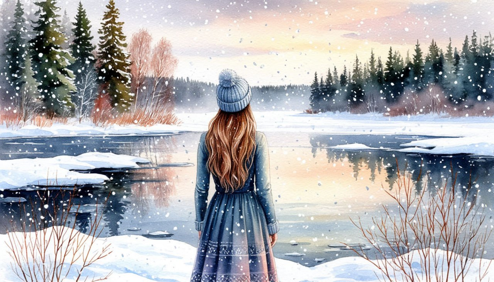

Новогодний МЕГА -ТУР в Карелию

Даты тура: с 3 января 2026 года (сб) по 7 января 2026 года (сб)
Стоимость тура:
- 29 000 р. - взрослый
- 28 700 р. - пенсионеры/школьники
- 33 000 р./чел - одноместное размещение
По программе:
- - Обзорная экскурсия по новогоднему Петрозаводску
- - Экскурсия в художественную галерею «Дом Куклы»
- - Экскурсия в заповедник Кивач
- - Мастер-класс по приготовлению калиток
- - Мастер-класс по обучению игре на национальном инструменте КАНТЕЛЕ
- - Новогодняя развлекательная программа: весёлые колядки и зимние песни у костра, новогодний обряд шаманского бубна, угощение карельским чаем, подарки от духов и сказочных героев
- - Остров Кижи
Программа тура:
1 день:
- 15-00- выезд из Костромы от ТРЦ "РИО"
2 день:
- Сегодня мы отправляемся в самое популярное и фотографируемое место Карелии - остров Кижи. Это удивительный и неповторимый по своей красоте и самобытности остров на Онежском озере.
- Наш путь будет лежать через Медвежьегорск - небольшой карельский город, известный своими уникальными достопримечательностями и тем, что он и его окрестности были запечатлены на киноэкране – именно здесь снимали картину «Любовь и голуби».
- Здесь нас ждет вкусный завтрак и экскурсия.
- Далее мы поедем по просторам Заонежья, где почти нет населенных пунктов, а сопровождает путников затаенная красота Заонежского полуострова.
- И так под неторопливый рассказ гида мы доедем до малюсенькой деревеньки, откуда на судне воздушной подушке доберемся до о.Кижи , что бы полюбоваться знаменитым Кижским ансамблем.
- Прибытие на Кижи. Тишиной и гармонией карельской зимы встречает гостей остров. Бескрайнее голубое небо, яркое зимнее солнце и невероятной белизны снег завораживают и удивляют.
- Обзорная пешеходная экскурсия (1 час 30 минут). Экскурсия проводится по основной экспозиции музея: осмотр памятников Кижского архитектурного ансамбля, посещение крестьянской усадьбы.
- Вы осмотрите уникальные многоглавые храмы и иконописное убранство Покровской церкви Кижского погоста, войдете в дом заонежского крестьянина, узнаете, как и чем жили эти люди, увидите церковь Воскрешения Лазаря.
- Обед в кафе
- Переезд в Петрозаводск ( 270 км)
- Заселение в гостиницу
3 день:
- Завтрак.
- Обзорная экскурсия по новогоднему Петрозаводску. На обзорной экскурсии Вы увидите красивую набережную Онежского озера, где вас ждёт «Дерево желаний» и другие авангардные скульптуры, подаренные городу городами-побратимами. Обязательно заглянем в Губернаторский парк! Увлекательная экскурсия в художественную галерею «Дом Куклы», единственную частную галерею в Петрозаводске.
- Здесь царит атмосфера сказки и добра.
- Вы познакомитесь с коллекцией авторских кукол Татьяны Калининой «Духи Карелии или Кижские домовые».
- На память можете приобрести очаровательного ангелочка или домового.
- Свободное время, которое Вы можете провести в Новогоднем городке и еще больше полюбить зимнюю Карелию.
4 день:
- Завтрак
- Экскурсия в заповедник Кивач
- Заповедник «Кивач» является одним из старейших на территории России. Он был основан ещё в 1931 году. Заповедник – настоящий памятник, хранящий красоту удивительной Карельской природы
- Водопад Кивач – природная жемчужина заповедника и Карелии, это второй по величине равнинный водопад в Европе. Смотреть на падение воды можно бесконечно, водопад скатывается каскадами, разбрызгивая капли на фоне живописных природных пейзажей! Водопад Кивач окутан тайнами и легендами. Увидеть его стоит хотя бы для того, чтобы узнать интересные факты и сделать красивейшие фотографии.
- Переезд в Кондопогу, красиво расположившуюся на берегу Онежского озера.
- Новогодняя развлекательная программа. Отправляемся на берег Онежского озера.
- В уютном северном чуме переплетаются саамские легенды и любимые сказки! Вас ждёт волшебное приключение вместе с Дедом Морозом, героями и духами Севера: весёлые колядки и зимние песни у костра, новогодний обряд шаманского бубна, угощение карельским чаем, подарки от духов и сказочных героев! В зимней истории с карельским колоритом Вы станете частью волшебства! Посещение питомника ездовых собак. Опытный каюр познакомит со своими питомцами, милые хаски, северный олень всегда готовы позировать для фото в приятной компании.
- Далее нас ждет два интереснейших Мастер класса:
- Мастер-класс по приготовлению калиток.
- Калитки по праву считаются жемчужиной северной кухни. В старину их ещё называли колядками и преснушками, пекли открытыми из ржаного теста с различными начинками, наливками, намазками или припёками.
- После приготовления мы вместе пробуем их за чаепитием.
- Мастер-класс по обучению игре на национальном инструменте КАНТЕЛЕ.
- Обед "шведский стол"
- Окончание программы, выезд домой.
5 день:
Прибытие в Кострому (ориентировочно после обеда)
В стоимость тура входит:
- - проживание в гостинице*
- * Гостиница "Уют" 2* (Номер реестровой записи: С102024006207)
- - Двухразовое питание
- - услуги гида-экскурсовода
- - экскурсионная программа
- - автобусное обслуживание по программе тура
- - Мастер-классы
Стоимость тура не зафиксированы и могут быть изменены в большую или меньшую сторону в зависимости от уровня спроса в любой момент.
Время начала экскурсий и их порядок указано ориентировочно.
Фирма-исполнитель оставляет за собой право замены экскурсий без уменьшения общего объема экскурсионной программы.
По вопросам бронирования обращайтесь: